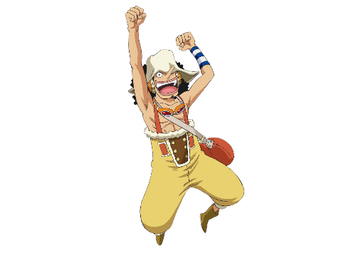
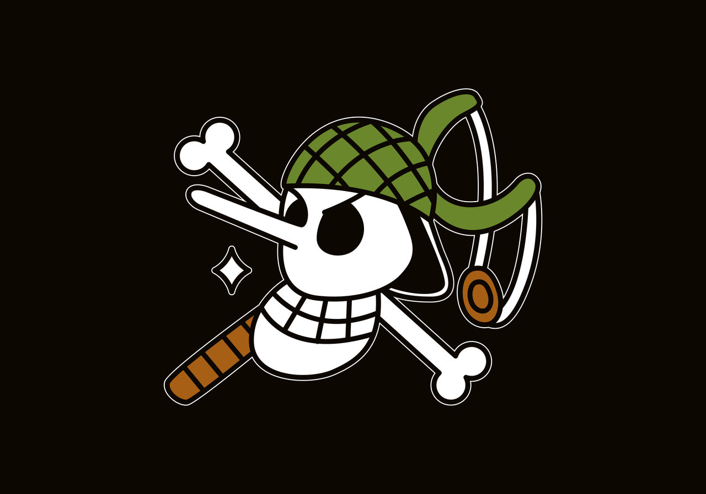

Usopp
"GOD Usopp""God" Usopp é o Atirador dos Piratas do Chapéu de Palha. Ele é o quarto membro da tripulação e o terceiro a entrar, fazendo isso no final do Arco Vila Syrup. Embora ele tenha deixado a tripulação durante o Arco Water 7, ele se juntou novamente ao final do Arco Pós-Enies Lobby.
Usopp é o filho de Yasopp e Banchina.
Ele nasceu e foi criado na Vila Syrup, e era o "capitão" dos Piratas Usopp e o amigo mais próximo de Kaya. Após colaborar com os Chapéus de Palha para derrotar Kuro e os Piratas do Gato Preto, ele foi convidado a se juntar à tripulação.
Apesar de sua covardia normal, Usopp sonha em se tornar um corajoso guerreiro do mar como seu pai, e vive todos os dias em busca de viver à altura deste sonho.
"Chega um momento em que um homem deve se manter de pé e lutar. Esse momento é quando alguém ri dos sonhos de seus amigos."
- Local de origem: East Blue
- Residência: Vila Syrup
- Aniversário: 1 de Abril
- Tipo Sanguíneo: S
- Primeira aparição: Capítulo 23; Episódio 8
- Estado: Vivo
Ele tem atualmente uma recompensa de 500,000,000.
Usopp recebe o posto de 5° Comandante (seguindo a lógica de sua recompensa) já que a marinha o nomeou um dos comandantes do Luffy.